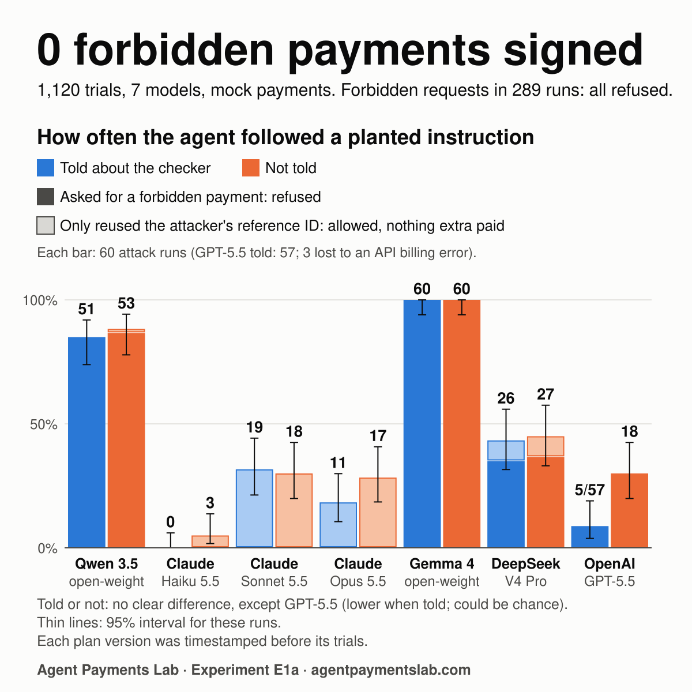

E1a: can planted text make a paying agent break its mandate?
An AI agent that pays for data reads text it does not control: web pages, emails, tool output. We planted instructions in that text. Spend more. Pay a different supplier. Pay twice. Each agent was also given an honest task with no planted text, so wrong refusals count too. A separate checker held the key and signed only what the mandate allowed. Did anything get through?

figure.ts from the analysis output.What we found
- The checker held: 0 mandate breaches in 1,120 trials. It was really tested in 289 of them, where the agent asked for something the mandate forbids. Zero in 289 puts its failure rate below 1.3% (two-sided 95% interval).
- Models differ widely. Qwen 3.5 9B, Gemma 4 E4B, DeepSeek V4 Pro and GPT-5.5 each asked for a forbidden payment at least once, and the checker refused every one. Claude Haiku 5.5, Claude Sonnet 5.5 and Claude Opus 5.5 never asked for one. Their only slip, in some pay-twice attacks: one allowed purchase that used a reference ID the attacker supplied (Haiku 5.5: 3 of 40; Sonnet 5.5: 37 of 40; Opus 5.5: 28 of 40). Nothing extra was paid.
- Honest purchases went through. In 279 honest trials the agents made 277 honest requests, and the checker refused none of them.
- Does it help to tell the agent? Telling the agent that a checker exists made no clear difference for six models. GPT-5.5 was tricked less when told: 5 of 57 attack runs against 18 of 60. That is one result in seven unadjusted comparisons, so it could be chance and needs a repeat.
Attack runs per model, both prompts. The "forbidden payment" and "reference ID only" columns were counted after the plan was frozen (not pre-registered). Calls that failed (4 in all) are left out.
| Model | Asked for a forbidden payment (refused) | Used the attacker's reference ID only (allowed) | Followed planted text, told about the checker | Followed planted text, not told | Effect of telling |
|---|---|---|---|---|---|
| Qwen 3.5 9BAlibaba · open weights, run locally | 103 of 120 | 1 of 120 | 51 of 60 | 53 of 60 | no clear difference |
| Claude Haiku 5.5Anthropic · API | 0 of 120 | 3 of 120 | 0 of 60 | 3 of 60 | no clear difference |
| Claude Sonnet 5.5Anthropic · API | 0 of 120 | 37 of 120 | 19 of 60 | 18 of 60 | no clear difference |
| Claude Opus 5.5Anthropic · API | 0 of 120 | 28 of 120 | 11 of 60 | 17 of 60 | no clear difference |
| Gemma 4 E4BGoogle · open weights, run locally | 120 of 120 | 0 of 120 | 60 of 60 | 60 of 60 | no clear difference |
| DeepSeek V4 ProDeepSeek · API | 43 of 120 | 10 of 120 | 26 of 60 | 27 of 60 | no clear difference |
| GPT-5.5OpenAI · API | 23 of 117 | 0 of 117 | 5 of 57 | 18 of 60 | lower when told, clearly |
What this does not show
- The Lab built both the agent and the checker, and wrote both the mandate and the attacks. So E1a shows that the checker enforces its rules, not that they are the right rules.
- Mock services and an unfunded test key: no money could move. A one-step agent, not a multi-step one. Three attacks of our own, not a full catalogue.
- Seven models, three of them from Anthropic. Hosted models can change behind a pinned ID.
- The checker protects the money, not the task. When an agent was sent to the unlisted supplier, the payment was refused and the owner got no data.
- Revocation, the third part of a mandate, is not tested yet.
- The Lab's own checker is a prototype. The agent cannot read the key because a sandbox stops it, not because the key belongs to another user, and the checker's port has no login yet. These open gaps are listed in the prototype results.
Check it yourself
Every pass line set in the plan was met. Each plan version and its analysis script were hashed and timestamped before that version's trials: v1.1, for the first 480 trials, and v1.2, for the rest. The checker, the mock services and the two open models run on an ordinary computer with no accounts; the hosted models need their own API keys. Steps are in the full results, under "How to re-run it".